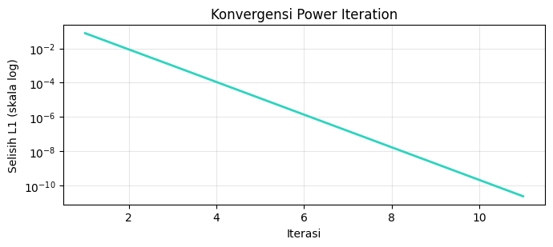
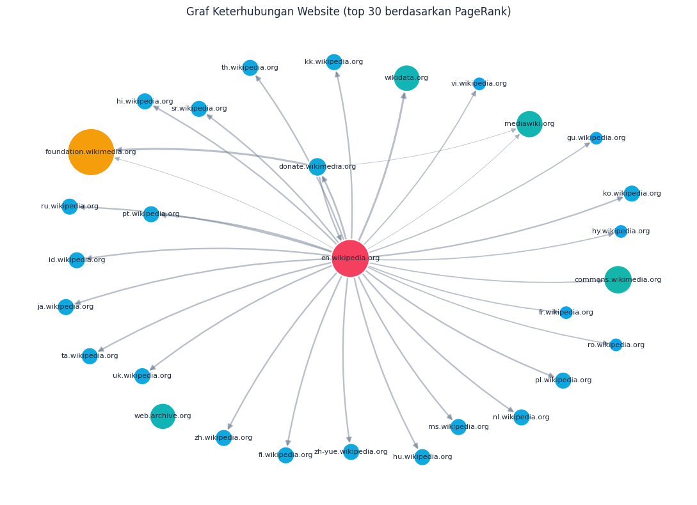
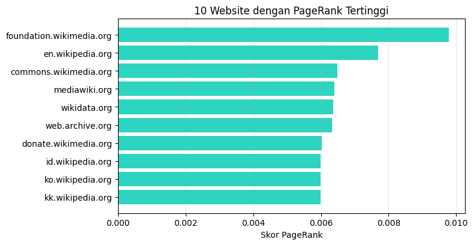

Web Crawling dan Analisis PageRank (Web Structure Mining)#
Mata kuliah: Pencarian & Penambangan Web
Notebook ini membangun sistem yang (1) meng-crawl sebuah website dan mengekstraksi tautannya secara berulang,
(2) memodelkan hubungan antarwebsite sebagai graf berarah, (3) menghitung PageRank dengan power iteration,
lalu (4) menentukan website dengan tingkat kepentingan tertinggi. Hasilnya juga tersedia sebagai aplikasi interaktif (app.py).
1. Landasan Teori: Web Structure Mining & Algoritma PageRank#
Web Structure Mining menganalisis struktur tautan (hyperlink) antarhalaman untuk menemukan pola, misalnya halaman mana yang menjadi pusat rujukan. Web dimodelkan sebagai graf berarah \(G=(V,E)\): tiap halaman/website adalah simpul (node) dan tiap tautan dari A ke B adalah sisi berarah \(A \rightarrow B\).
PageRank menilai kepentingan sebuah simpul dari banyaknya tautan masuk dan dari seberapa penting simpul yang menautkannya. Intuisinya: seorang random surfer mengikuti tautan secara acak, sesekali melompat ke halaman acak. PageRank adalah peluang surfer berada di suatu halaman dalam jangka panjang:
\(d\) : damping factor (umumnya 0,85) — peluang surfer mengikuti tautan.
\(N\) : jumlah simpul.
\(w_{ji}\) : bobot tautan \(j \rightarrow i\) (jumlah tautan), \(W_j=\sum_i w_{ji}\) : total bobot keluar dari \(j\).
\(D\) : simpul dangling (tanpa tautan keluar), skornya dibagi rata ke semua simpul.
Nilai PageRank dihitung berulang (power iteration) sampai selisih antariterasi sangat kecil (konvergen).
2. Persiapan Lingkungan & Pustaka#
# Pasang library bila belum ada (hapus tanda # lalu jalankan):
# !pip install requests beautifulsoup4 networkx numpy pandas matplotlib scipy
import time
import re
from collections import Counter, deque, defaultdict
from urllib.parse import urljoin, urldefrag, urlparse
from urllib.robotparser import RobotFileParser
import requests
import numpy as np
import pandas as pd
import networkx as nx
import matplotlib.pyplot as plt
from matplotlib.colors import LinearSegmentedColormap
from bs4 import BeautifulSoup
from IPython.display import display
pd.set_option("display.float_format", lambda v: f"{v:.5f}")
print("Library siap digunakan.")
Library siap digunakan.
3. Implementasi Web Crawler Rekursif (Breadth-First Search)#
Crawler memakai antrean BFS: halaman seed dikunjungi lebih dulu (kedalaman 0), lalu semua tautannya (kedalaman 1), dan seterusnya sampai batas kedalaman. Beberapa batasan menjaga crawling tetap sopan dan terkendali:
batas kedalaman, total halaman, dan halaman per website (agar tidak habis di satu situs),
jeda antar request dan batas waktu,
kepatuhan pada
robots.txt,hanya memproses halaman HTML (file gambar, PDF, dsb. dilewati).
HEADERS = {"User-Agent": "PPW-LabCrawler/1.0 (tugas kuliah Pencarian & Penambangan Web)"}
SKIP_EXT = (".pdf", ".jpg", ".jpeg", ".png", ".gif", ".svg", ".webp", ".ico", ".zip", ".rar", ".gz",
".mp3", ".mp4", ".avi", ".mov", ".doc", ".docx", ".xls", ".xlsx", ".ppt", ".pptx",
".css", ".js", ".xml", ".json")
def normalize_url(url):
"""Buang fragment (#...), rapikan trailing slash, hanya http/https, lewati file non-HTML."""
if not url:
return None
url, _ = urldefrag(url.strip())
p = urlparse(url)
if p.scheme not in ("http", "https") or not p.netloc:
return None
path = p.path or "/"
if path != "/" and path.endswith("/"):
path = path.rstrip("/")
if path.lower().endswith(SKIP_EXT):
return None
return p._replace(netloc=p.netloc.lower(), path=path, fragment="").geturl()
def get_domain(url):
return urlparse(url).netloc.lower().removeprefix("www.")
_robots = {}
def allowed_by_robots(url, timeout=10):
p = urlparse(url)
base = f"{p.scheme}://{p.netloc}"
if base not in _robots:
rp = RobotFileParser()
try:
r = requests.get(base + "/robots.txt", headers=HEADERS, timeout=timeout)
rp.parse(r.text.splitlines() if r.status_code == 200 else [])
except requests.RequestException:
rp.parse([])
_robots[base] = rp
return _robots[base].can_fetch(HEADERS["User-Agent"], url)
def crawl(seed_urls, max_depth=2, max_pages=30, max_per_domain=5, delay=0.5,
time_limit=60, respect_robots=True, timeout=10, max_links_per_page=150):
"""BFS dari seed. Mengembalikan (pages, edges, errors).
pages : {url: {title, text, depth}} edges : {(url_sumber, url_tujuan)}"""
if isinstance(seed_urls, str):
seed_urls = [seed_urls]
seeds = [s for s in (normalize_url(u) for u in seed_urls) if s]
pages, edges, errors = {}, set(), {}
queue = deque((s, 0) for s in dict.fromkeys(seeds))
queued, per_domain, start = set(seeds), Counter(), time.time()
while queue and len(pages) < max_pages and time.time() - start <= time_limit:
url, depth = queue.popleft()
dom = get_domain(url)
if per_domain[dom] >= max_per_domain:
continue
per_domain[dom] += 1
if respect_robots and not allowed_by_robots(url, timeout):
errors[url] = "Diblokir robots.txt"
continue
try:
resp = requests.get(url, headers=HEADERS, timeout=timeout)
if resp.status_code != 200 or "text/html" not in resp.headers.get("Content-Type", ""):
errors[url] = f"Status {resp.status_code}"
continue
except requests.RequestException as e:
errors[url] = str(e)[:100]
continue
soup = BeautifulSoup(resp.text, "html.parser")
title = soup.title.get_text(strip=True) if soup.title else url
for tag in soup(["script", "style", "noscript"]):
tag.decompose()
pages[url] = {"title": title, "depth": depth,
"text": " ".join(soup.get_text(" ", strip=True).split())[:5000]}
links = []
for a in soup.find_all("a", href=True):
t = normalize_url(urljoin(url, a["href"]))
if t and t != url and t not in links:
links.append(t)
if len(links) >= max_links_per_page:
break
for t in links:
edges.add((url, t))
if depth < max_depth and t not in queued:
queued.add(t)
queue.append((t, depth + 1))
time.sleep(delay)
return pages, edges, errors
4. Eksekusi Crawling pada Website Target#
Isi link website dan judul paper di bawah. Link menjadi titik awal crawling; judul paper dipakai untuk menghitung skor relevansi tiap website pada tahap analisis.
SEED_URL = "https://en.wikipedia.org/wiki/PageRank"
PAPER_TITLE = "PageRank Algorithm for Web Crawling and Link Structure Analysis"
MAX_DEPTH, MAX_PAGES, MAX_PER_DOMAIN = 2, 30, 5
DELAY, TIME_LIMIT = 0.5, 60
DAMPING = 0.85
t0 = time.time()
pages, page_edges, errors = crawl(SEED_URL, MAX_DEPTH, MAX_PAGES, MAX_PER_DOMAIN, DELAY, TIME_LIMIT)
print(f"Crawling selesai dalam {time.time() - t0:.0f} detik")
print(f"Halaman berhasil di-crawl : {len(pages)}")
print(f"Tautan antarhalaman : {len(page_edges)}")
print(f"Halaman gagal/dilewati : {len(errors)}")
Crawling selesai dalam 62 detik
Halaman berhasil di-crawl : 17
Tautan antarhalaman : 2222
Halaman gagal/dilewati : 1
# Cadangan agar notebook tetap bisa dijalankan tanpa internet (mis. saat build otomatis).
# Data di bawah adalah DATA CONTOH, bukan hasil crawling sungguhan, dan ditandai DEMO = True.
DEMO = False
if not page_edges:
DEMO = True
print("PERINGATAN: crawling tidak menghasilkan data (tidak ada koneksi / situs menolak).")
print("Notebook memakai DATA CONTOH agar sel berikutnya tetap berjalan. Jalankan ulang dengan internet untuk hasil asli.")
demo = {
"kampus.ac.id": ["fakultas.kampus.ac.id", "jurnal.kampus.ac.id", "google.com", "youtube.com", "github.com"],
"fakultas.kampus.ac.id": ["kampus.ac.id", "jurnal.kampus.ac.id", "google.com"],
"jurnal.kampus.ac.id": ["kampus.ac.id", "doi.org", "scholar.google.com", "google.com"],
"doi.org": ["crossref.org"],
"scholar.google.com": ["google.com"],
"google.com": ["youtube.com"],
"youtube.com": ["google.com"],
"github.com": ["google.com", "docs.github.com"],
"docs.github.com": ["github.com"],
"crossref.org": ["doi.org"],
}
SEED_URL = "https://kampus.ac.id/"
page_edges = {(f"https://{s}/", f"https://{d}/p{i}") for s, ds in demo.items() for i, d in enumerate(ds)}
pages = {f"https://{s}/": {"title": s, "depth": 0,
"text": "sistem informasi geografis data stunting balita web" if "jurnal" in s else "beranda website"}
for s in demo}
print("Mode data:", "DEMO (data contoh)" if DEMO else "crawling sungguhan")
Mode data: crawling sungguhan
sample = pd.DataFrame(sorted(page_edges)[:10], columns=["Halaman sumber", "Halaman tujuan"])
display(sample)
| Halaman sumber | Halaman tujuan | |
|---|---|---|
| 0 | https://ar.wikipedia.org/wiki/%D8%A8%D9%8A%D8%... | http://www.google.com/press/funfacts.html |
| 1 | https://ar.wikipedia.org/wiki/%D8%A8%D9%8A%D8%... | http://www.tahatek.com/suchmaschinenoptimierun... |
| 2 | https://ar.wikipedia.org/wiki/%D8%A8%D9%8A%D8%... | https://ar.wikipedia.org/w/index.php?title=%D8... |
| 3 | https://ar.wikipedia.org/wiki/%D8%A8%D9%8A%D8%... | https://ar.wikipedia.org/w/index.php?title=%D8... |
| 4 | https://ar.wikipedia.org/wiki/%D8%A8%D9%8A%D8%... | https://ar.wikipedia.org/w/index.php?title=%D8... |
| 5 | https://ar.wikipedia.org/wiki/%D8%A8%D9%8A%D8%... | https://ar.wikipedia.org/w/index.php?title=%D8... |
| 6 | https://ar.wikipedia.org/wiki/%D8%A8%D9%8A%D8%... | https://ar.wikipedia.org/w/index.php?title=%D8... |
| 7 | https://ar.wikipedia.org/wiki/%D8%A8%D9%8A%D8%... | https://ar.wikipedia.org/w/index.php?title=%D8... |
| 8 | https://ar.wikipedia.org/wiki/%D8%A8%D9%8A%D8%... | https://ar.wikipedia.org/w/index.php?title=%D8... |
| 9 | https://ar.wikipedia.org/wiki/%D8%A8%D9%8A%D8%... | https://ar.wikipedia.org/w/index.php?title=%D8... |
5. Pemodelan Topologi Graf Terarah (Directed Graph)#
Tautan level halaman digabung menjadi tautan level website (domain). Bobot sisi \(w_{ji}\) adalah jumlah tautan dari website \(j\) ke website \(i\). Tautan ke website sendiri (self-loop) dibuang karena tidak menunjukkan pengaruh antarwebsite.
def aggregate_to_domain(page_edges):
agg = Counter()
for src, dst in page_edges:
s, d = get_domain(src), get_domain(dst)
if s != d:
agg[(s, d)] += 1
return agg
edges = aggregate_to_domain(page_edges) # {(website_asal, website_tujuan): bobot}
G = nx.DiGraph()
for (s, d), w in edges.items():
G.add_edge(s, d, weight=w)
print(f"Jumlah simpul (website) : {G.number_of_nodes()}")
print(f"Jumlah sisi (tautan) : {G.number_of_edges()}")
print(f"Kepadatan graf : {nx.density(G):.4f}")
print(f"Simpul tanpa tautan keluar (dangling): {sum(1 for n in G if G.out_degree(n) == 0)}")
edge_df = (pd.DataFrame([(s, d, w) for (s, d), w in edges.items()], columns=["Sumber", "Tujuan", "Bobot"])
.sort_values("Bobot", ascending=False).reset_index(drop=True))
display(edge_df.head(10))
Jumlah simpul (website) : 190
Jumlah sisi (tautan) : 805
Kepadatan graf : 0.0224
Simpul tanpa tautan keluar (dangling): 176
| Sumber | Tujuan | Bobot | |
|---|---|---|---|
| 0 | eu.wikipedia.org | en.wikipedia.org | 10 |
| 1 | bn.wikipedia.org | foundation.wikimedia.org | 6 |
| 2 | es.wikipedia.org | foundation.wikimedia.org | 6 |
| 3 | ar.wikipedia.org | web.archive.org | 5 |
| 4 | da.wikipedia.org | foundation.wikimedia.org | 5 |
| 5 | eu.wikipedia.org | foundation.wikimedia.org | 5 |
| 6 | donate.wikimedia.org | foundation.wikimedia.org | 5 |
| 7 | az.wikipedia.org | foundation.wikimedia.org | 5 |
| 8 | el.wikipedia.org | foundation.wikimedia.org | 5 |
| 9 | en.wikipedia.org | wikidata.org | 5 |
6. Implementasi Algoritma PageRank From Scratch (Power Iteration)#
Algoritma dibuat sendiri tanpa memanggil nx.pagerank. Langkahnya:
Semua simpul diberi skor awal \(1/N\).
Tiap iterasi, setiap simpul membagi skornya ke tetangga tujuan sebanding bobot tautan.
Skor simpul dangling dibagi rata ke seluruh simpul, lalu ditambah komponen lompatan acak \((1-d)/N\).
Ulangi sampai jumlah selisih mutlak antariterasi (norma L1) di bawah toleransi.
def pagerank_scratch(edges, damping=0.85, max_iter=200, tol=1e-10, weighted=True):
nodes = sorted({n for e in edges for n in e})
n = len(nodes)
idx = {node: i for i, node in enumerate(nodes)}
src = np.array([idx[s] for s, _ in edges])
dst = np.array([idx[d] for _, d in edges])
w = np.array([edges[e] if weighted else 1.0 for e in edges], dtype=float)
out_sum = np.bincount(src, weights=w, minlength=n) # total bobot keluar tiap simpul
trans = w / out_sum[src] # peluang berpindah j -> i
dangling = out_sum == 0
pr = np.full(n, 1.0 / n)
history = []
for it in range(1, max_iter + 1):
inflow = np.bincount(dst, weights=pr[src] * trans, minlength=n)
new = damping * (inflow + pr[dangling].sum() / n) + (1 - damping) / n
delta = np.abs(new - pr).sum()
history.append(delta)
pr = new
if delta < tol:
break
return {nodes[i]: float(pr[i]) for i in range(n)}, history
scores, history = pagerank_scratch(edges, damping=DAMPING)
print(f"Konvergen dalam {len(history)} iterasi")
print(f"Jumlah seluruh skor PageRank = {sum(scores.values()):.6f} (harus 1)")
Konvergen dalam 11 iterasi
Jumlah seluruh skor PageRank = 1.000000 (harus 1)
plt.figure(figsize=(7, 3.2))
plt.semilogy(range(1, len(history) + 1), history, color="#2dd4bf", lw=2)
plt.xlabel("Iterasi"); plt.ylabel("Selisih L1 (skala log)")
plt.title("Konvergensi Power Iteration"); plt.grid(alpha=.3)
plt.tight_layout(); plt.show()

7. Validasi dan Komparasi dengan NetworkX#
Hasil implementasi sendiri dibandingkan dengan networkx.pagerank memakai parameter yang sama
(damping dan bobot sisi). Selisih yang sangat kecil menunjukkan implementasi sudah benar.
nx_scores = nx.pagerank(G, alpha=DAMPING, weight="weight", tol=1e-12, max_iter=1000)
compare = pd.DataFrame({"Scratch": pd.Series(scores), "NetworkX": pd.Series(nx_scores)})
compare["Selisih"] = (compare["Scratch"] - compare["NetworkX"]).abs()
compare = compare.sort_values("Scratch", ascending=False)
display(compare.head(10))
max_diff = compare["Selisih"].max()
print(f"Selisih maksimum : {max_diff:.2e}")
print("Urutan 10 teratas sama:", list(compare.index[:10]) == sorted(nx_scores, key=nx_scores.get, reverse=True)[:10])
assert max_diff < 1e-6, "Implementasi menyimpang dari NetworkX"
| Scratch | NetworkX | Selisih | |
|---|---|---|---|
| foundation.wikimedia.org | 0.00977 | 0.00977 | 0.00000 |
| en.wikipedia.org | 0.00769 | 0.00769 | 0.00000 |
| commons.wikimedia.org | 0.00649 | 0.00649 | 0.00000 |
| mediawiki.org | 0.00640 | 0.00640 | 0.00000 |
| wikidata.org | 0.00635 | 0.00635 | 0.00000 |
| web.archive.org | 0.00633 | 0.00633 | 0.00000 |
| donate.wikimedia.org | 0.00602 | 0.00602 | 0.00000 |
| id.wikipedia.org | 0.00599 | 0.00599 | 0.00000 |
| ko.wikipedia.org | 0.00599 | 0.00599 | 0.00000 |
| kk.wikipedia.org | 0.00599 | 0.00599 | 0.00000 |
Selisih maksimum : 1.73e-17
Urutan 10 teratas sama: False
8. Visualisasi Graf Jaringan Web#
Ukuran dan warna simpul mengikuti PageRank (biru-hijau = rendah, kuning = tinggi). Website awal diberi warna koral. Ketebalan garis menunjukkan jumlah tautan, dan panah menunjukkan arah tautan.
def draw_graph(G, scores, seed_domain=None, top_n=30, figsize=(11, 8)):
top = sorted(scores, key=scores.get, reverse=True)[:top_n]
keep = set(top) | ({seed_domain} if seed_domain in G else set())
H = G.subgraph(keep)
vals = np.array([scores[n] for n in H.nodes])
t = (vals - vals.min()) / (vals.max() - vals.min() + 1e-12)
t = t ** 0.6
# warna sedikit lebih tua agar jelas di latar putih
cmap = LinearSegmentedColormap.from_list("aurora_light", ["#0ea5e9", "#14b8a6", "#84cc16", "#f59e0b"])
colors = [cmap(v) for v in t]
colors = ["#f43f5e" if n == seed_domain else c for n, c in zip(H.nodes, colors)]
sizes = 250 + 2600 * t
widths = [min(0.6 + np.log(H[u][v]["weight"]), 4) for u, v in H.edges]
pos = nx.spring_layout(H, k=1.2 / np.sqrt(max(len(H), 1)), seed=42, weight=None)
fig, ax = plt.subplots(figsize=figsize, facecolor="white")
ax.set_facecolor("white")
nx.draw_networkx_edges(H, pos, ax=ax, width=widths, edge_color="#64748b", alpha=.45,
arrows=True, arrowsize=12, connectionstyle="arc3,rad=0.08",
node_size=sizes)
nx.draw_networkx_nodes(H, pos, ax=ax, node_size=sizes, node_color=colors,
edgecolors="white", linewidths=1.5)
labels = {n: (n if len(n) <= 24 else n[:21] + "...") for n in H.nodes}
nx.draw_networkx_labels(H, pos, labels, ax=ax, font_size=8, font_color="#1e293b")
ax.set_title(f"Graf Keterhubungan Website (top {len(H)} berdasarkan PageRank)",
color="#1e293b", fontsize=12)
ax.axis("off")
plt.tight_layout(); plt.show()
seed_domain = get_domain(SEED_URL)
draw_graph(G, scores, seed_domain)

9. Analisis Hasil & Peringkat Website Terpenting#
Tabel peringkat memuat skor PageRank, jumlah tautan masuk/keluar, dan skor relevansi judul paper (proporsi kata kunci judul yang muncul pada teks halaman website tersebut).
STOPWORDS = {"the", "of", "and", "a", "an", "in", "on", "for", "to", "with", "by", "using", "based",
"yang", "dan", "di", "ke", "dari", "untuk", "pada", "dengan", "atau", "sebuah", "analisis"}
def tokens(text):
return {t for t in re.findall(r"[a-zA-Z0-9]+", text.lower()) if t not in STOPWORDS and len(t) > 2}
domain_text = defaultdict(str)
for url, info in pages.items():
domain_text[get_domain(url)] += f" {info['title']} {info['text']}"
query = tokens(PAPER_TITLE)
def relevance(domain):
if not query or domain not in domain_text:
return np.nan
return round(len(query & tokens(domain_text[domain])) / len(query), 3)
crawled = Counter(get_domain(u) for u in pages)
ranking = pd.DataFrame({
"Website": list(scores),
"PageRank": [scores[n] for n in scores],
"Tautan masuk": [G.in_degree(n) for n in scores],
"Tautan keluar": [G.out_degree(n) for n in scores],
"Halaman di-crawl": [crawled.get(n, 0) for n in scores],
"Relevansi judul": [relevance(n) for n in scores],
}).sort_values("PageRank", ascending=False).reset_index(drop=True)
ranking.index += 1
ranking.index.name = "Peringkat"
display(ranking.head(15))
| Website | PageRank | Tautan masuk | Tautan keluar | Halaman di-crawl | Relevansi judul | |
|---|---|---|---|---|---|---|
| Peringkat | ||||||
| 1 | foundation.wikimedia.org | 0.00977 | 9 | 0 | 0 | NaN |
| 2 | en.wikipedia.org | 0.00769 | 13 | 157 | 4 | 0.85700 |
| 3 | commons.wikimedia.org | 0.00649 | 13 | 0 | 0 | NaN |
| 4 | mediawiki.org | 0.00640 | 9 | 0 | 0 | NaN |
| 5 | wikidata.org | 0.00635 | 13 | 0 | 0 | NaN |
| 6 | web.archive.org | 0.00633 | 8 | 0 | 0 | NaN |
| 7 | donate.wikimedia.org | 0.00602 | 13 | 7 | 1 | 0.00000 |
| 8 | id.wikipedia.org | 0.00599 | 13 | 0 | 0 | NaN |
| 9 | ko.wikipedia.org | 0.00599 | 13 | 0 | 0 | NaN |
| 10 | kk.wikipedia.org | 0.00599 | 13 | 0 | 0 | NaN |
| 11 | uk.wikipedia.org | 0.00599 | 13 | 0 | 0 | NaN |
| 12 | hi.wikipedia.org | 0.00599 | 13 | 0 | 0 | NaN |
| 13 | fi.wikipedia.org | 0.00599 | 13 | 0 | 0 | NaN |
| 14 | nl.wikipedia.org | 0.00599 | 13 | 0 | 0 | NaN |
| 15 | ja.wikipedia.org | 0.00599 | 13 | 0 | 0 | NaN |
top10 = ranking.head(10).iloc[::-1]
plt.figure(figsize=(8, 4.2))
plt.barh(top10["Website"], top10["PageRank"], color="#2dd4bf")
plt.xlabel("Skor PageRank"); plt.title("10 Website dengan PageRank Tertinggi")
plt.grid(axis="x", alpha=.3); plt.tight_layout(); plt.show()

best = ranking.iloc[0]
print("Mode data :", "DEMO (data contoh)" if DEMO else "hasil crawling sungguhan")
print(f"Website terpenting: {best['Website']} (PageRank = {best['PageRank']:.5f})")
print(f" - tautan masuk dari {int(best['Tautan masuk'])} website, tautan keluar ke {int(best['Tautan keluar'])} website")
if query:
rel = ranking.dropna(subset=["Relevansi judul"]).sort_values(["Relevansi judul", "PageRank"], ascending=False)
rel = rel[rel["Relevansi judul"] > 0].head(5)
print("\nWebsite paling relevan dengan judul paper:")
display(rel[["Website", "Relevansi judul", "PageRank"]] if len(rel) else pd.DataFrame())
Mode data : hasil crawling sungguhan
Website terpenting: foundation.wikimedia.org (PageRank = 0.00977)
- tautan masuk dari 9 website, tautan keluar ke 0 website
Website paling relevan dengan judul paper:
| Website | Relevansi judul | PageRank | |
|---|---|---|---|
| Peringkat | |||
| 2 | en.wikipedia.org | 0.85700 | 0.00769 |
| 40 | ar.wikipedia.org | 0.71400 | 0.00591 |
| 48 | de.wikipedia.org | 0.42900 | 0.00586 |
| 39 | es.wikipedia.org | 0.28600 | 0.00592 |
| 41 | eu.wikipedia.org | 0.28600 | 0.00590 |
Kesimpulan#
(Tulis kesimpulan dengan kalimat Anda sendiri setelah menjalankan notebook dengan data sungguhan, misalnya: website mana yang paling penting, mengapa website itu mendapat PageRank tertinggi (banyak tautan masuk atau dirujuk website penting), dan apakah website tersebut relevan dengan judul paper.)
10. Persiapan dan Deployment Aplikasi Interaktif (app.py)#
Seluruh alur di atas dikemas menjadi aplikasi web berbasis Streamlit: pengguna mengisi link website dan/atau judul paper, lalu aplikasi menampilkan graf interaktif, peringkat PageRank, website terkait, dan tombol unduh hasil.
Struktur berkas aplikasi (folder pagerank_crawler/):
Berkas |
Fungsi |
|---|---|
|
Antarmuka dan pengendali alur |
|
Mencari website awal dari judul paper |
|
Crawler BFS |
|
PageRank, tabel peringkat, relevansi |
|
Graf interaktif (pyvis) |
|
Daftar dependensi |
|
Tema tampilan |
Cara Menjalankan Aplikasi di Lokal#
Windows (PowerShell), dari folder pagerank_crawler:
python -m venv .venv-crawler
.\.venv-crawler\Scripts\Activate.ps1
python -m pip install -r requirements.txt
python -m streamlit run app.py
Aplikasi terbuka di http://localhost:8501.
Cara Menjalankan Aplikasi di Server Warga Laboratorium#
Linux, dari folder pagerank_crawler:
git clone <alamat-repo-github>
cd <nama-repo>/pagerank_crawler
python3 -m venv .venv
source .venv/bin/activate
pip install -r requirements.txt
nohup python -m streamlit run app.py --server.address 0.0.0.0 --server.port 8501 > app.log 2>&1 &
Aplikasi dapat dibuka di http://<IP-server>:8501. Hal yang perlu dipastikan dengan admin lab: versi Python 3.9 ke atas,
server dapat mengakses internet (untuk crawling), port 8501 terbuka, dan, bila ingin berjalan permanen, dijalankan sebagai
layanan systemd atau di dalam tmux/screen.